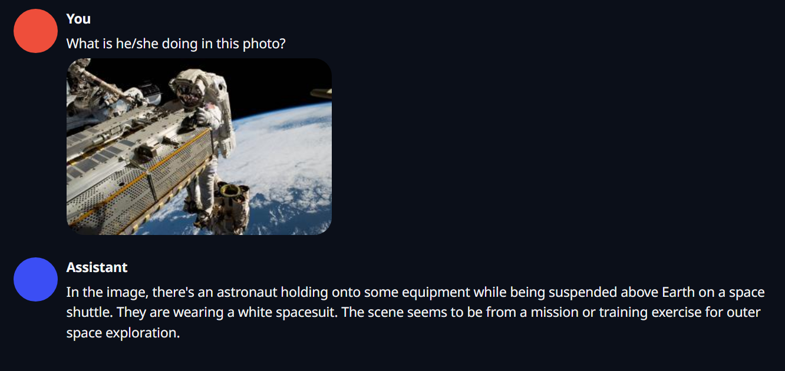
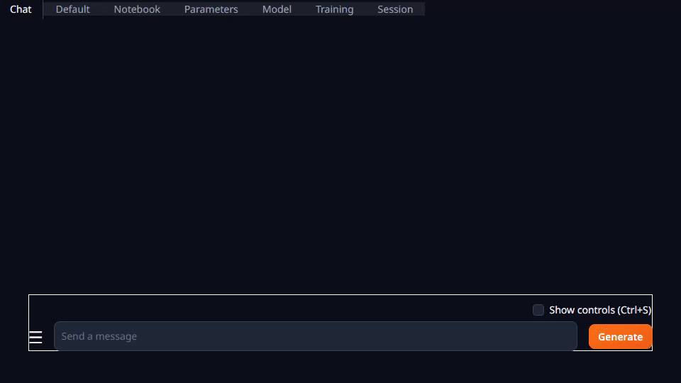

Tutorial - LLaVA
Give your locally running LLM an access to vision, by running LLaVA on Jetson!

Clone and set up jetson-containers
git clone https://github.com/dusty-nv/jetson-containers
cd jetson-containers
sudo apt update; sudo apt install -y python3-pip
pip3 install -r requirements.txt
1. Use text-generation-webui container to test Llava model
What you need
-
One of the following Jetson:
Jetson AGX Orin 64GB Jetson AGX Orin (32GB)
-
Running one of the following JetPack.5x
JetPack 5.1.2 (L4T r35.4.1) JetPack 5.1.1 (L4T r35.3.1) JetPack 5.1 (L4T r35.2.1)
-
Sufficient storage space (preferably with NVMe SSD).
6.2GBfortext-generation-webuicontainer image- Space for models
- CLIP model :
1.7GB - Llava-Llama2 merged model :
7.3GB
- CLIP model :
Use text-generation-webui container for web UI
Using the multimodal extension, you can use the LLaVA model in oobaboonga's text-generation-webui.
./run.sh $(./autotag text-generation-webui) /bin/bash -c \
"python3 /opt/text-generation-webui/download-model.py \
--output=/data/models/text-generation-webui \
liuhaotian/llava-llama-2-13b-chat-lightning-gptq"
./run.sh $(./autotag text-generation-webui) /bin/bash -c \
"cd /opt/text-generation-webui && python3 server.py --listen \
--model-dir=/data/models/text-generation-webui \
--model=liuhaotian_llava-llama-2-13b-chat-lightning-gptq \
--multimodal-pipeline=llava-llama-2-13b \
--extensions=multimodal \
--chat \
--verbose"
Go to Chat tab, drag and drop an image of your choice into the Drop Image Here area, and your question in the text area above and hit Generate button.

Result
2. Use llava container to run llava.serve.cli
What you need
-
One of the following Jetson:
Jetson AGX Orin 64GB Jetson AGX Orin (32GB)
-
Running one of the following JetPack.5x
JetPack 5.1.2 (L4T r35.4.1) JetPack 5.1.1 (L4T r35.3.1) JetPack 5.1 (L4T r35.2.1)
-
Sufficient storage space (preferably with NVMe SSD).
6.1GBforllavacontainer image- Space for models
- 7B model :
14GB, or - 13B model :
26GB
- 7B model :
See jetson-containers' llava package README for more infomation**
llava-llama-2-7b-chat
./run.sh --env HUGGING_FACE_HUB_TOKEN=<YOUR-ACCESS-TOKEN> $(./autotag llava) \
python3 -m llava.serve.cli \
--model-path liuhaotian/llava-llama-2-7b-chat-lightning-lora-preview \
--model-base meta-llama/Llama-2-7b-chat-hf \
--image-file /data/images/hoover.jpg
llava-llama-2-13b-chat
This may only run on Jetson AGX Orin 64GB.
./run.sh $(./autotag llava) \
python3 -m llava.serve.cli \
--model-path liuhaotian/llava-llama-2-13b-chat-lightning-preview \
--image-file /data/images/hoover.jpg